Experiencias que se viven despacio
Dos rutas guiadas para acercarte al agua, la biodiversidad y las memorias comunitarias.
Ver rutas🌿 ecoTurismo comunitario en bicicleta
Conecta con los humedales, las huertas y las voces que protegen este territorio vivo de Bogotá.
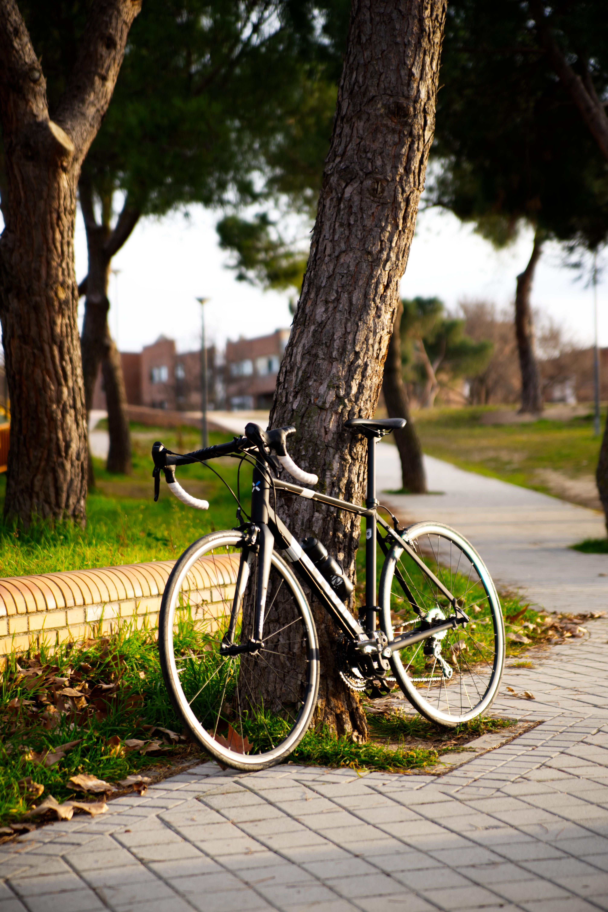
✨ Una vitrina para el territorio
Nativa conecta experiencias de bajo impacto con productos, servicios y saberes locales para que cada visita deje raíces.
Dos rutas guiadas para acercarte al agua, la biodiversidad y las memorias comunitarias.
Ver rutasExplora piezas, alimentos y oficios locales que mantienen vivo el vínculo entre comunidad y territorio.
Entrar al marketplace🚴 Rutas Nativa
Recorridos de baja huella para escuchar el territorio con quienes lo habitan y cuidan.
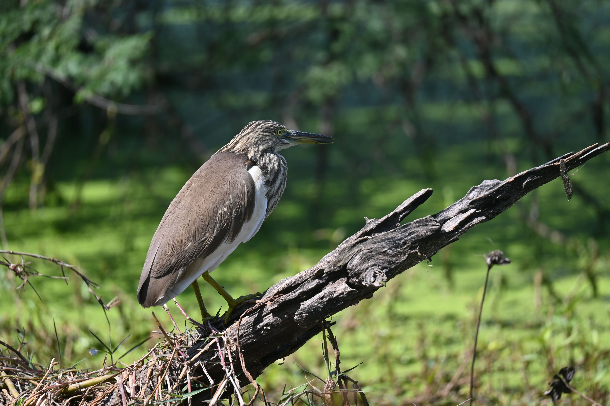
💧 Agua y biodiversidadUna travesía entre canales, aves y relatos de restauración alrededor de los humedales de Suba.
Reservar esta ruta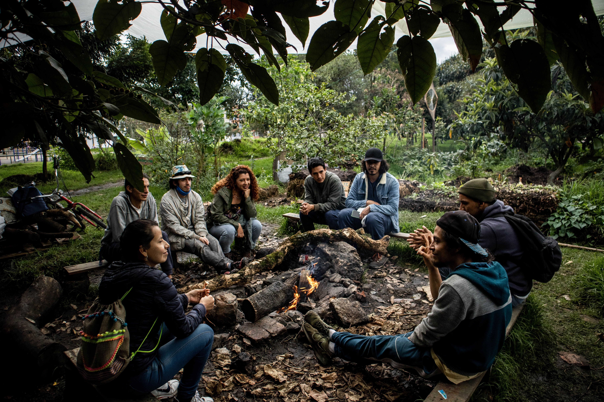
🔥 Memoria ancestralUna experiencia de interpretación cultural junto a memorias muiscas, caminos rurales y saberes de la sabana.
Reservar esta ruta🛍️ Marketplace turístico
Productos artesanales, agroecológicos y botánicos elaborados por iniciativas locales de Suba.
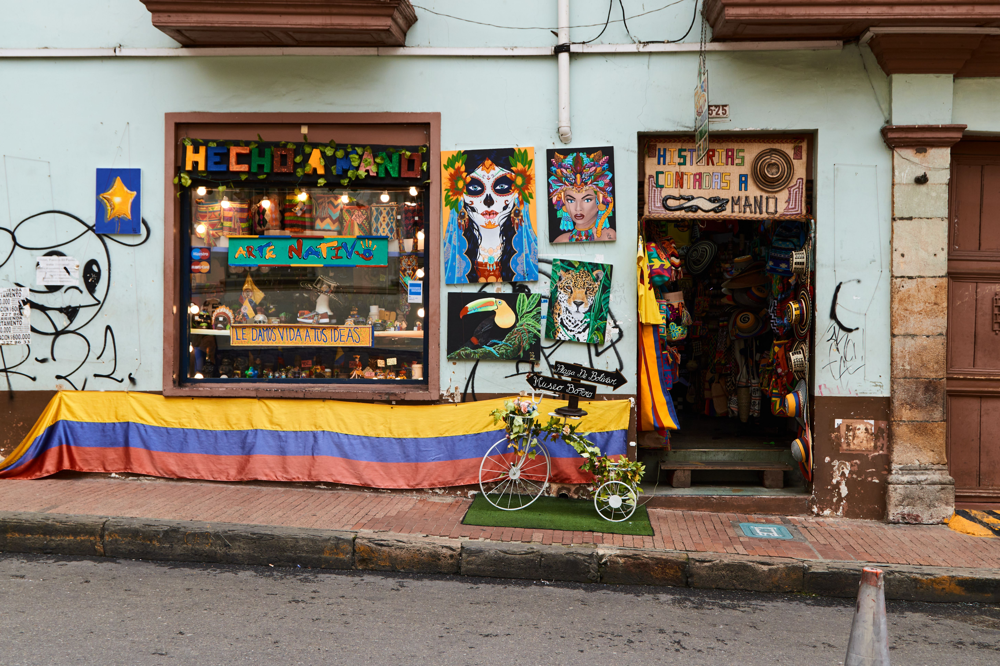
Piezas inspiradas en las aguas, semillas y aves de la sabana.
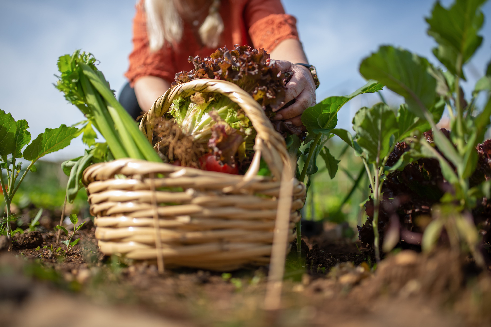
Cosechas de huertas urbanas, frescas y cultivadas con cuidado.
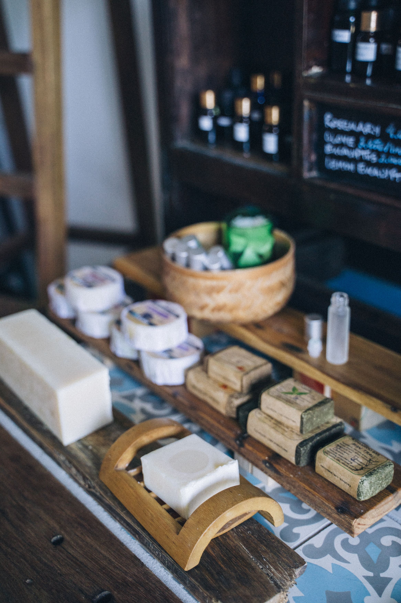
Jabones, ungüentos e infusiones de plantas de uso responsable.
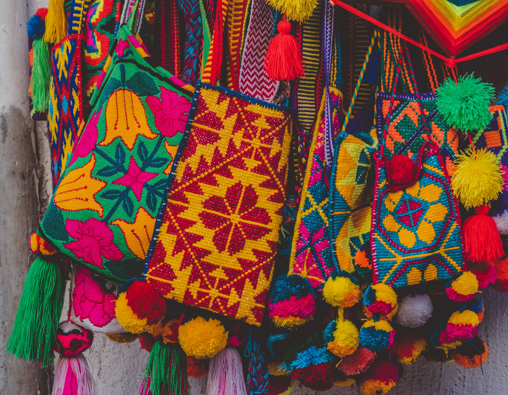
Accesorios tejidos que llevan color, oficio y relatos comunitarios.
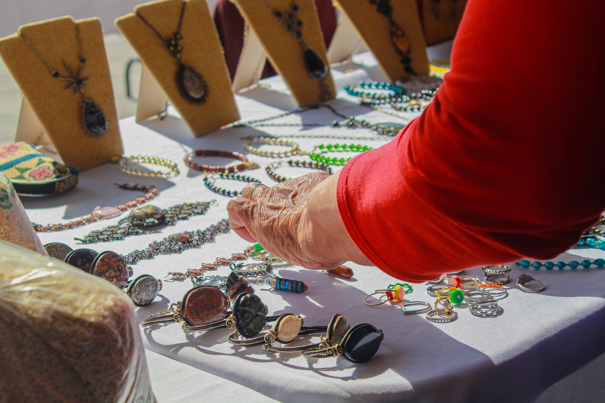
Pequeñas piezas elaboradas a mano para celebrar el detalle.
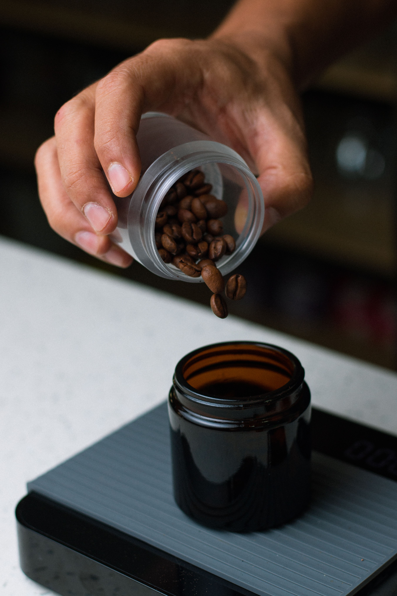
Tostión local en pequeños lotes para acompañar cada conversación.
📍 Directorio local
Una selección de hospedajes, servicios y emprendimientos para extender tu visita de forma consciente.
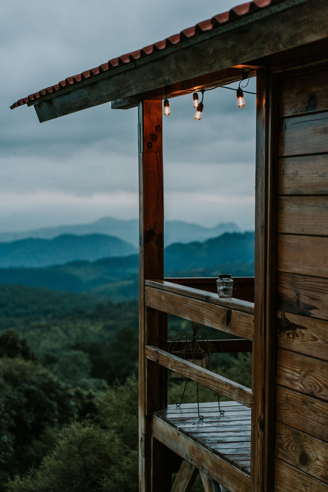
🏠 Hospedaje aliadoAlojamiento de escala pequeña para descansar cerca de la naturaleza.
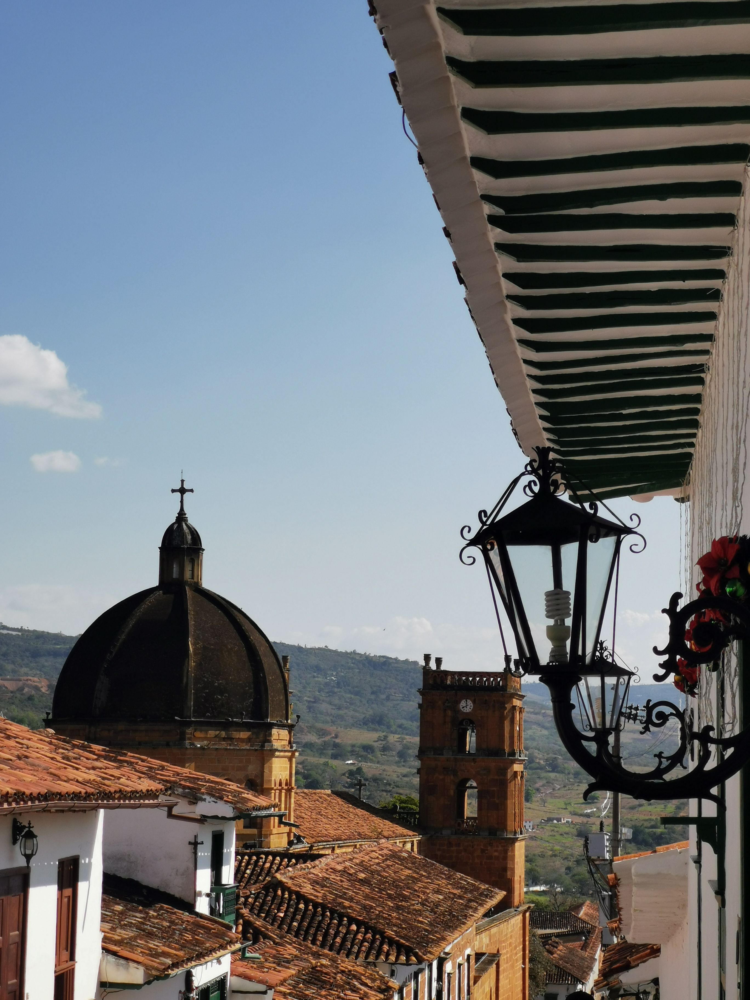
🏙️ Hospedaje urbanoUn punto de descanso con vegetación, historia y cercanía a la ciudad.
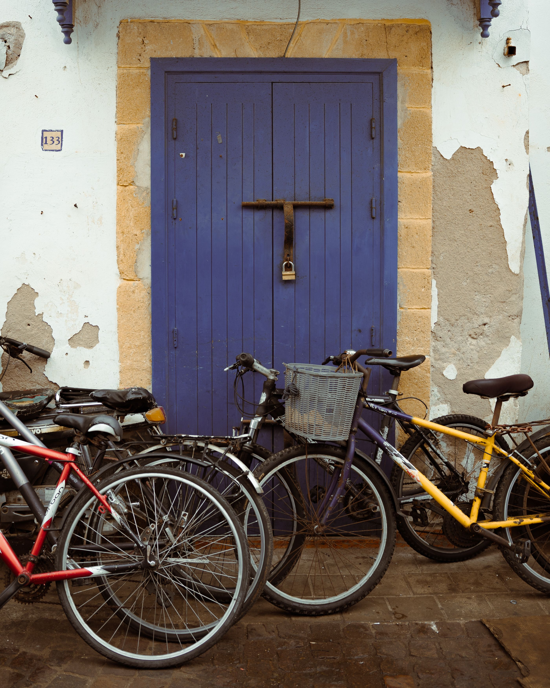
🚲 Servicio turísticoApoyo para movilidad, ajustes y alquiler de bicicletas para visitantes.
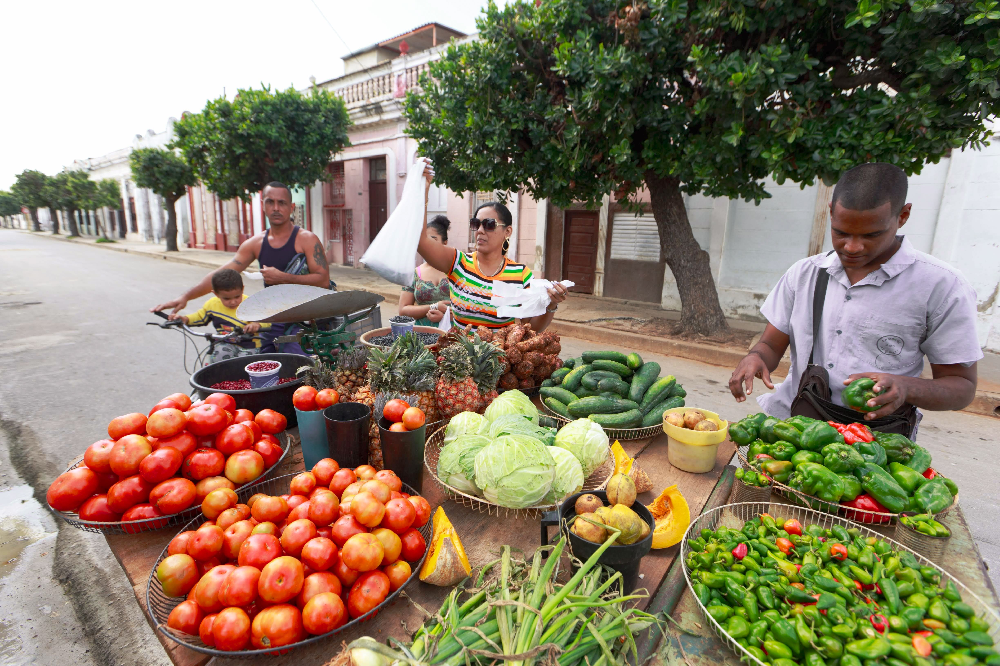
🍲 Sabores localesPreparaciones de temporada con ingredientes cercanos y conversación abierta.
📋 Reservas y pagos